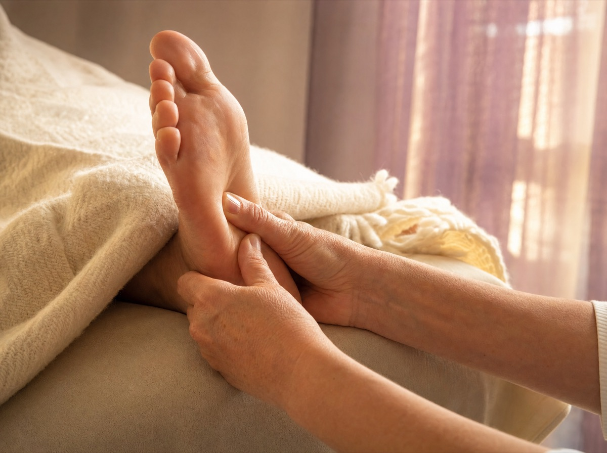
Klassikeren
Fotsoneterapi
Rolige, faste trykk på fotens soner. Mange kjenner at skuldrene senker seg allerede etter få minutter.
Kroppen er kartlagt i soner, og hver sone kan møtes med rolige hender. Hos Audhild på Rasta får du soneterapi, massasje og naturterapi i trygge omgivelser — alle dager fra 10 til 21.
Forenklet fremstilling. I behandlingen møtes hele foten, i ditt tempo.
Alle behandlinger tilpasses deg og kan kombineres i samme time. Er du usikker på hva som passer, finner dere ut av det sammen i starten av timen.

Rolige, faste trykk på fotens soner. Mange kjenner at skuldrene senker seg allerede etter få minutter.
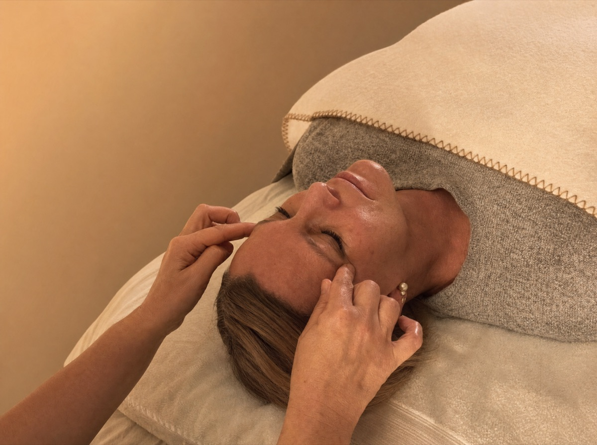
Lette berøringer av ansiktets soner. En stille behandling som ofte gir en følelse av klarhet og hvile.
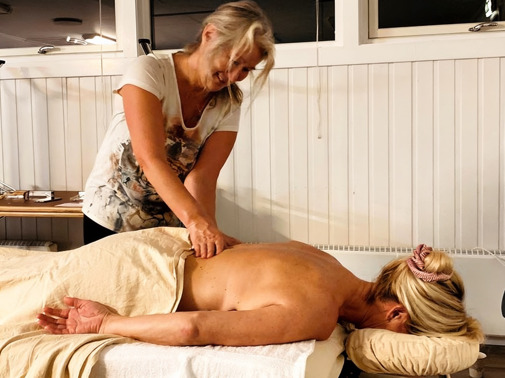
Klassisk massasje for stive skuldre, nakke og rygg. Trykket tilpasses fra mykt til fast underveis.
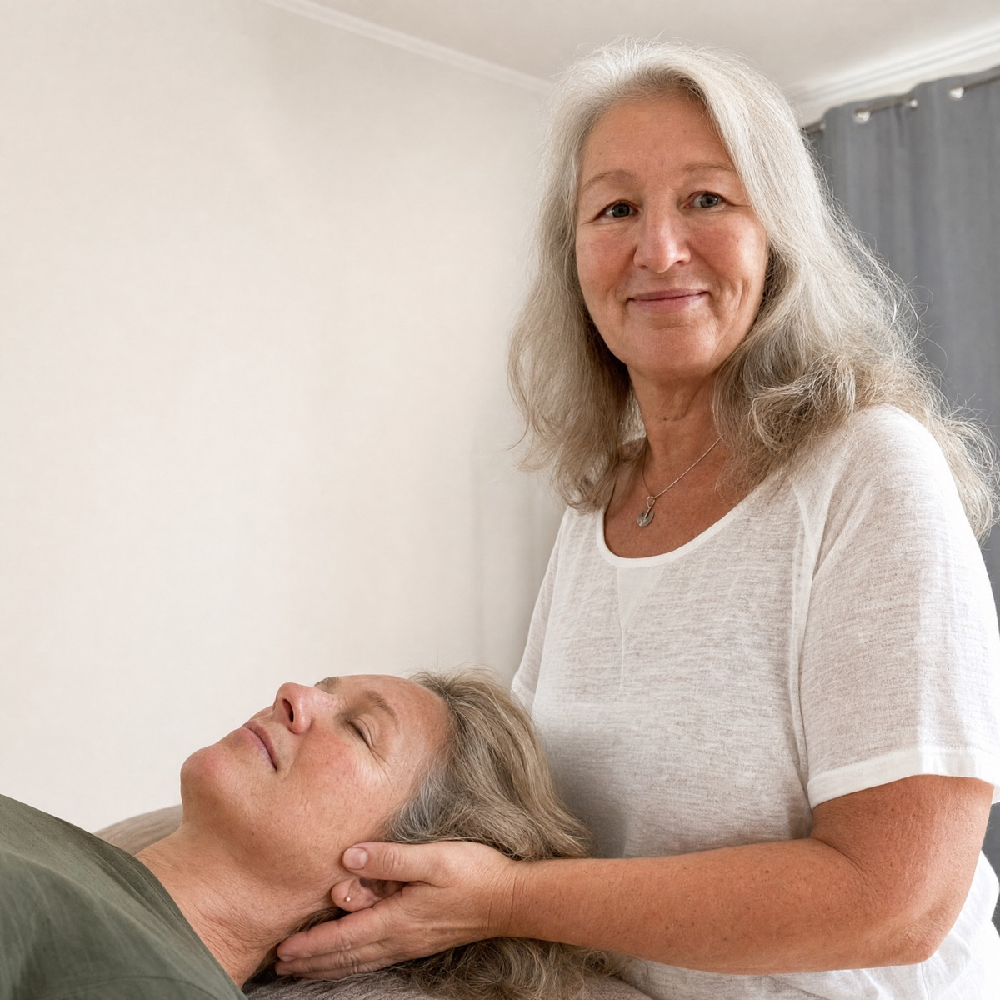
Svært lette holdegrep om hode, nakke og korsrygg. For deg som ønsker en rolig og varsom tilnærming.
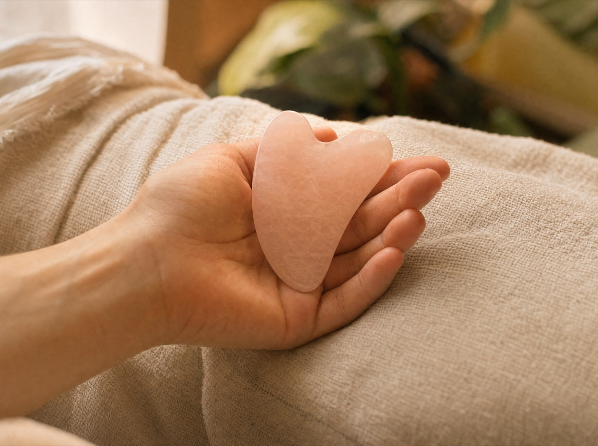
Oppvarmet, hjerteformet rosenkvarts strykes over ansiktets linjer. En varm og velgjørende ansiktsbehandling.
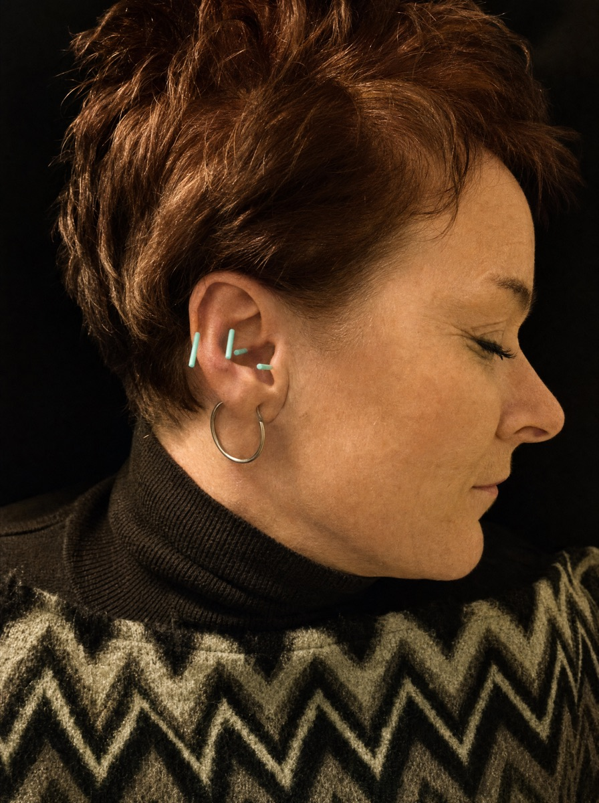
Ørets soner stimuleres med tynne nåler. Kombineres gjerne med soneterapi i samme time.
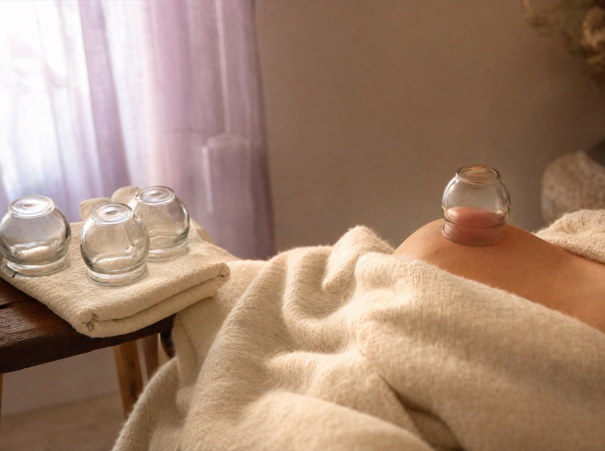
Skånsom kopping som løsner i vevet og kjennes som et dypt, behagelig drag i muskulaturen.
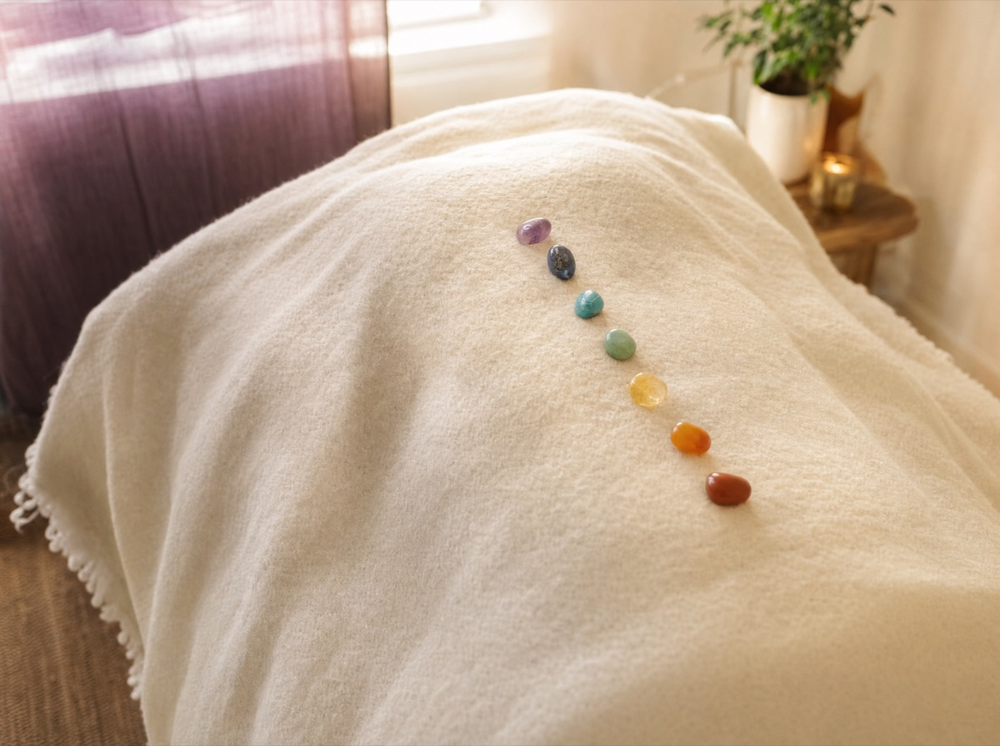
En stille time der kroppens energipunkter møtes med varme hender. For hvile på et dypere plan.
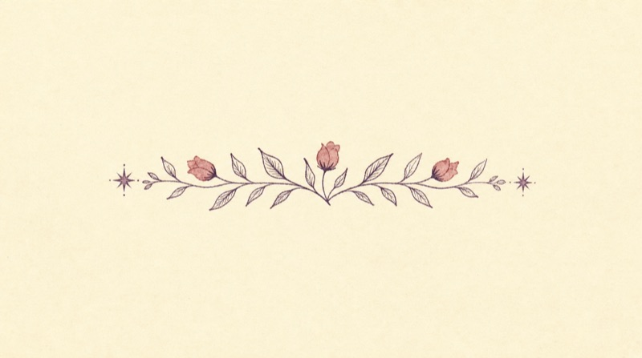
Aldri prøvd soneterapi før? Helt greit — de fleste har ikke det. Slik foregår det, fra du kommer til du går.
Vanlige, behagelige klær er alt du trenger. Det er god parkering rett ved Liaveien 49A.
Audhild lytter til hva du kommer med i dag — en sliten rygg, tankekjør eller bare behov for pause.
Én eller flere behandlingsformer settes sammen i ditt tempo. Du er alltid godt dekket med håndklær og tepper.
Etterpå får du litt tid til å komme til deg selv før du går ut i hverdagen igjen. Betal med Vipps eller kontant.
Én enkel prisliste: velg hvor lenge du vil bli. Innenfor timen kan flere behandlingsformer kombineres, uten tillegg.
Perfekt til fotsone eller ansiktsbehandling når hverdagen er travel.
Tid nok til en hel behandling, eller to former kombinert i ro og mak.
For deg som vil kjenne på skikkelig dyp hvile, uten å se på klokken.
Går du fast, lønner det seg. Kjøp fem timer og få den sjette på huset — du sparer inntil 1000 kr. Spør om klippekort neste gang du er innom.
Valgfritt beløp · Gjelder alle behandlinger
Liaveien 49A, Rasta
Et gavekort hos Via SONER er en time der noen andre tar seg av alt. Velg beløpet selv — en hel time til 800 kr er den vanligste gaven.
SMS eller e-post om hvem gavekortet er til og hvilket beløp du ønsker.
Vipps beløpet til 973 47 942, så er gavekortet betalt.
Du får gavekortet tilsendt digitalt, eller på papir om du heller vil ha noe å pakke inn.
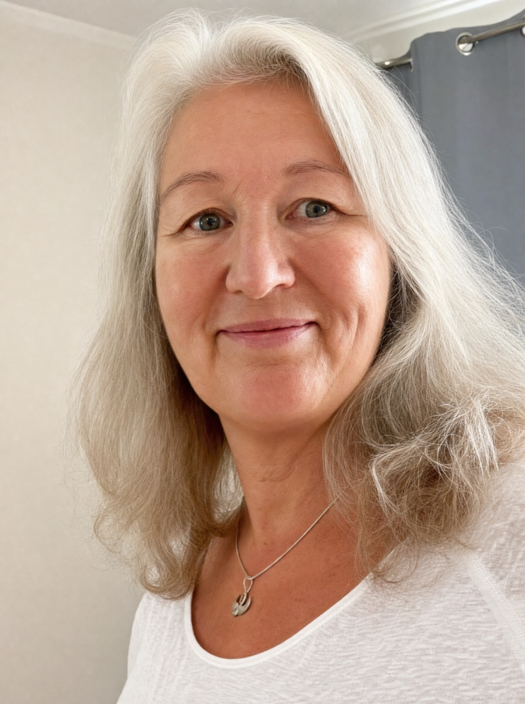
«Jeg tror på gode intensjoner, endringsvilje og at kroppen vil sin egen ro. Min jobb er å gi den tid og trygge hender.»
Audhild har jobbet med berøring og soneterapi siden 2013 og driver Via SONER fra sitt behandlingsrom i Liaveien 49A på Rasta. Hun er utdannet ved Axelsons Body Work School i Oslo, med yrkesutdannelse i soneterapi fra 2014 og en rekke videreutdannelser i årene etter.
Hos Audhild er ingen time helt lik. Hun lytter først, og setter så sammen behandlingen ut fra det du kommer med den dagen — enten det er en sliten rygg, tankekjør eller bare et ønske om en times ekte pause.
Videreutdannelse hos Inger J. Solend
Koppingsteknikker, Axelsons Body Work School
Tre utdannelser samme år, Axelsons Body Work School
Axelsons Body Work School, Oslo
Grunnkurs og healingmassasje hos Hans Axelson
Der det hele startet, hos Jose D. F. Garcia
Fra juni til august flytter Via SONER gjerne ut. Skogen rundt Oslo har sin egen virkning: lyden av trær, lukten av furu og bakken under føttene gjør noe med pusten før behandlingen i det hele tatt har begynt.
Berøring er noe av det eldste vi mennesker gjør for hverandre. Dette er virkningene klientene hos Via SONER oftest beskriver.
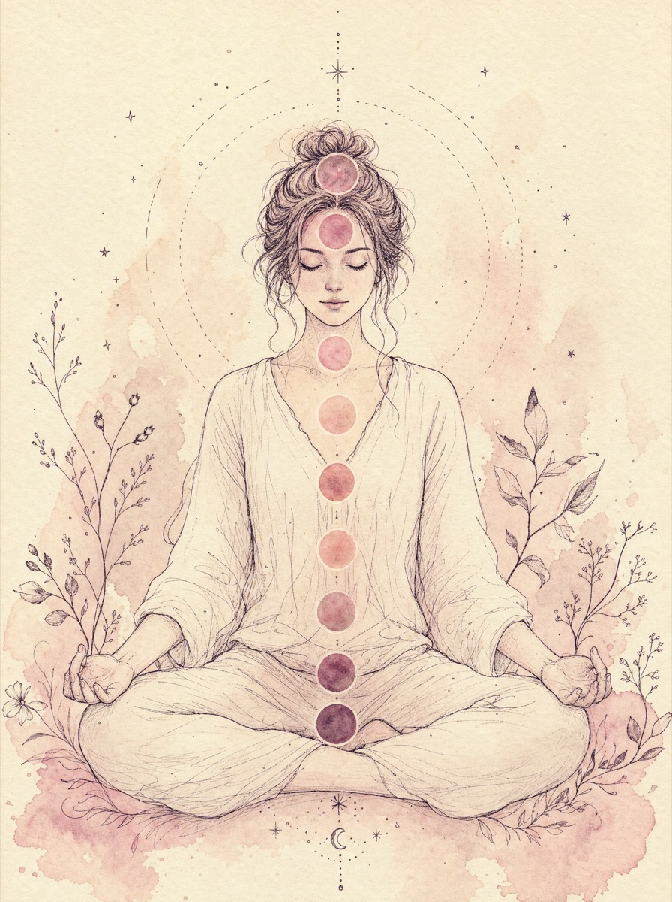
Kroppen får lov å slippe taket, ofte for første gang på lenge.
Mange forteller at natten etter behandling er roligere og dypere.
Rolige hender og et stille rom gir pusten plass til å senke seg.
Berøring setter fart på blodomløpet og gir varme ut i kroppen.
Paradoksalt nok gir dyp hvile ofte mer overskudd i dagene etter.
Myke muskler og senket spenning kjennes gjerne i dagene som følger.
Her er svarene på det folk oftest spør om. Finner du ikke ditt, er det bare å ringe eller sende en melding.
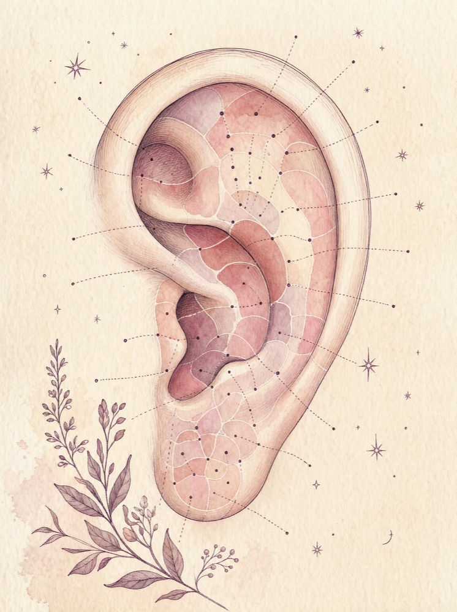
Timen starter med en kort samtale om hvordan du har det og hva du ønsker ut av behandlingen. Deretter setter Audhild sammen behandlingen ut fra det du kommer med den dagen. Hele samtalen skjer innenfor tiden du har bestilt.
Kom i vanlige, behagelige klær. Ved fotsoneterapi er det bare føttene som er bare, og ved massasje får du håndklær og tepper slik at du alltid er godt dekket.
Ja. Du betaler for tid, ikke for behandlingstype, så flere behandlingsformer kan kombineres i samme time uten tillegg i prisen.
Du betaler enkelt med Vipps til 973 47 942 etter timen, eller kontant om du foretrekker det.
Avbestilling er gratis frem til 24 timer før timen. Ved avbestilling samme dag eller uteblivelse belastes 300 kr.
Soneterapi og de andre behandlingene hos Via SONER er velværebehandlinger og et supplement til, aldri en erstatning for, nødvendig legehjelp. Er du usikker på egen helse, snakk med fastlegen din først.
Ja. Send en SMS eller e-post om hvem gavekortet er til og hvilket beløp du ønsker, betal med Vipps til 973 47 942, så får du gavekortet tilsendt digitalt eller klart til henting.
Ring eller send en melding, så finner dere et tidspunkt som passer. Behandlingsrommet ligger i Liaveien 49A på Rasta, med god parkering og kort vei fra både Lørenskog og Oslo.
Én telefon, så er timen din satt. Kvelds- og helgetimer er ledige hele uken.
Ring 973 47 942Eller send SMS til samme nummer — audhilsen@gmail.com for e-post.